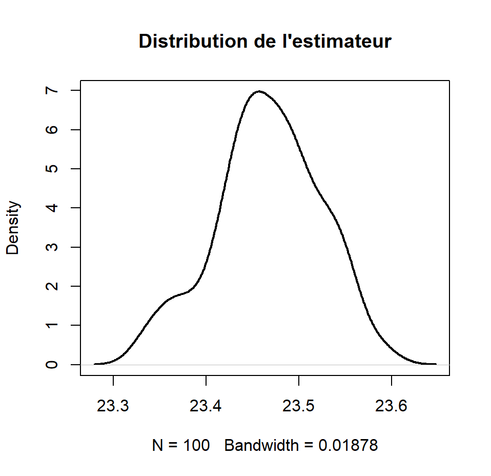

L'estimation par sondage

Contexte
Étude de l’âge des étudiants de première année du BUT Science des Données à travers l’estimation par sondage simple et l’analyse de populations simulées.
Méthode
Simulation de populations multimodales sous R, analyse descriptive et graphique, étude de la distribution de la moyenne d’échantillon et application du théorème central limite. Utilisation également du bootstrap pour construire un intervalle de confiance à 95 %.
Résultats
Les simulations montrent que la distribution de la moyenne se rapproche d’une loi normale lorsque la taille de l’échantillon augmente, avec une diminution de la variance. Le bootstrap permet également d’estimer la distribution de l’estimateur et de construire un intervalle de confiance sans hypothèse paramétrique forte.